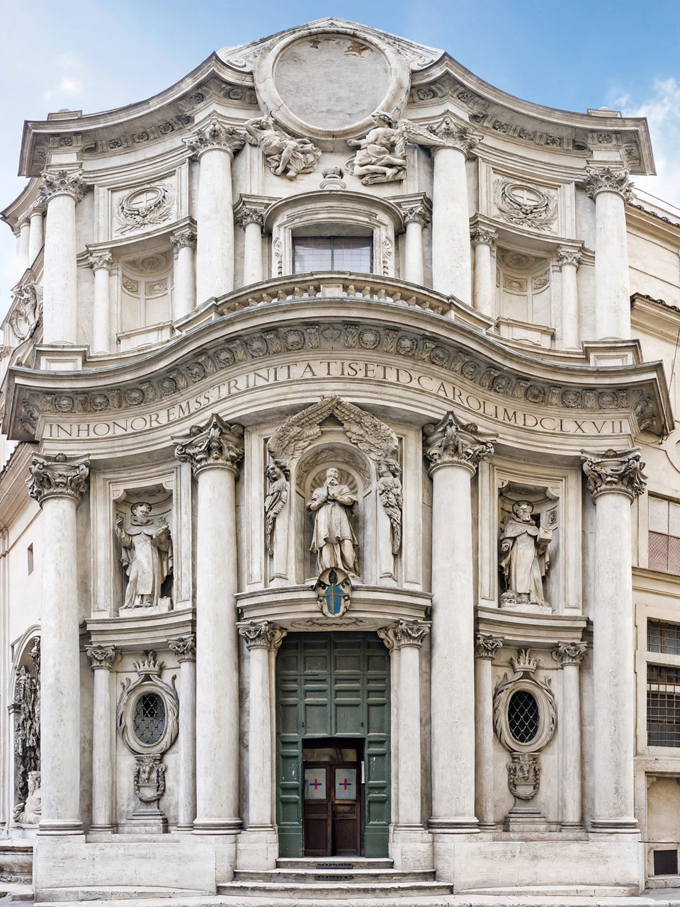

The Church of San Carlo alle Quattro Fontane (Saint Charles at the Four Fountains), also called San Carlino, is a Roman Catholic church in Rome, designed by Francesco Borromini and built between 1638 and 1646. It is a masterpiece of Italian Baroque architecture — remarkable for achieving extraordinary spatial complexity on a tiny site (the church is said to fit within one of the piers of St Peter's Basilica) with cheap materials, stucco and plaster in place of marble. The church stands on the Quirinal Hill at the crossing known as the Quattro Fontane, and serves the Spanish Trinitarian order for which it was built.
| Location | Via del Quirinale, Rome, Italy |
|---|---|
| Architect | Francesco Borromini |
| Construction | 1638–1641 (church); façade 1664–1677 |
| Style | Italian Baroque |
| Dedication | St Charles Borromeo and the Holy Trinity |
| Order | Trinitarians (Spanish Discalced Trinitarians) |

The Spanish Trinitarians commissioned Borromini in 1634 to build a church, cloister and convent on a cramped, awkward plot at the Quattro Fontane crossing. The cloister and convent were built first (1635–1637); the church followed in 1638–1641, consecrated in 1646. The façade, designed by Borromini, was built after his death in 1667 and completed in 1677 under his nephew Bernardo, working from the master's drawings. The church is dedicated to St Charles Borromeo and the Trinity, whose emblem of interlocking circles recurs throughout its geometry.
The plan is generated from two equilateral triangles forming a diamond, transformed into a continuous undulating oval space. Inside, the walls seem to ripple: columns, niches and entablature flow around the room in an unbroken wave, crowned by an oval dome whose coffers — crosses, octagons and lozenges — diminish toward the lantern, deepening the illusion of height. Hidden windows in the dome's base flood it with light. The small cloister, with its clipped corners and alternating convex and concave bays, is a miniature essay in the same geometry. The façade ripples in three bays of alternating curves, a sine-wave in stone unlike anything earlier in Rome.
San Carlino announced Borromini's radical alternative to Bernini's classicising Baroque and remains a touchstone for architects from Guarini to the present. Despite its size it is among the most analysed buildings in the history of architecture, celebrated for the unity of its plan, elevation and ornament.